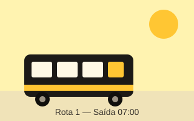

Como o UniBus vai funcionar
Esta página apresenta, de forma resumida, o funcionamento planejado para a plataforma UniBus — o transporte universitário com rastreio em tempo real.
Passo a passo do embarque
- 1. Cadastro — o estudante cria sua conta e escolhe sua rota.
- 2. Confirmação — a coordenação valida a matrícula e libera o acesso.
- 3. Rastreio — o app mostra o ônibus se aproximando em tempo real.
- 4. Embarque — o motorista confirma a presença do estudante na viagem.
- 5. Avisos — notificações de atraso, troca de rota ou chegada.
Frota em diferentes horários

Rota 1 — Saída 07:00